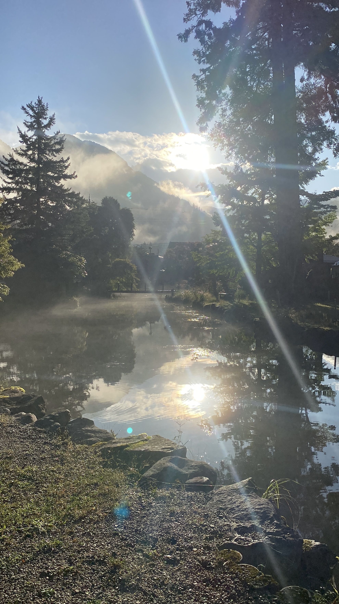
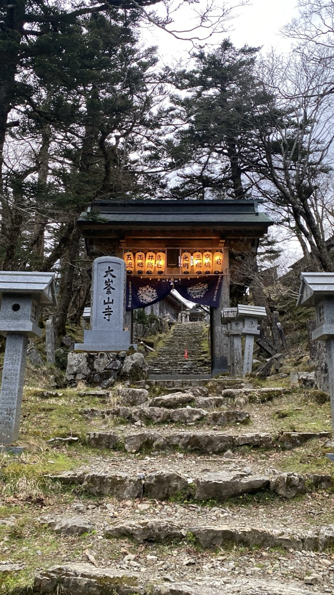
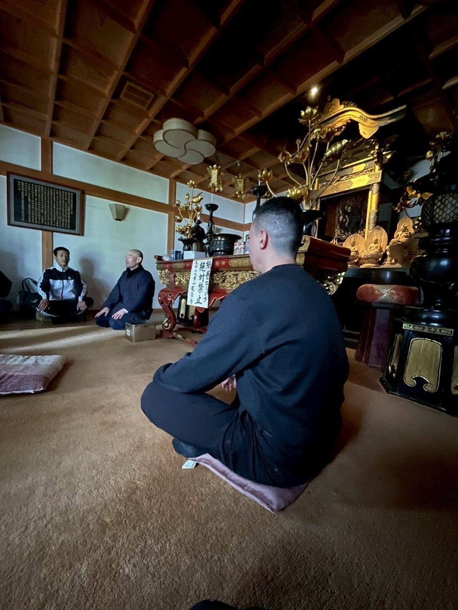

天川には、観光名所としてではなく、人が自分の感覚へ戻るための場の力があります。
天川には、観光名所としてではなく、人が自分の感覚へ戻るための場の力があります。
これは、売るためのページではありません。
まずは、チャラコ屋のみなさんと「こういう形で天川の体験を見せられる」という共通イメージを持つためのページです。
参加者を集める前に、企画の芯がどこにあるのか。誰に何を届けるのか。天川村という場が、どんな意味でこの企画に必要なのか。 その輪郭を、言葉だけではなく、写真、余白、流れとして一度見える形にしています。
観光ではなく、感覚を取り戻す。
学びではなく、あり方が変わる。
第2回の対話で、
「再生」の中身が深まりました。
第1回で見えた言葉は「再生」。第2回では、それが「感の再生」「文化を残すこと」「内省」「来た時よりも美しく」「ジャッジを外すあり方」へと開いていきました。
Takano
経済合理性だけでは残せない、文化を大切にする気持ち。修験道を、日本文化の深い根としてもう一度受け取り直す視点。
Ueyama
自己の内省の時間。日常に戻ったあと、5分でも自分に戻る時間が生まれること。そして、来た時よりも美しく。
Hokuto
感性、感動、感情、身体感覚、神や自然と調和する感覚。それらをまとめた「感」の再生。
Kaoru
修験道を道徳にしない。正しくなるためではなく、裁かず、自然とそうしたくなる自分へ戻ること。
この企画で扱うのは、足し算ではなく、引き算です。
現代の人は、情報、役割、肩書き、正しさ、成果を積み重ねすぎているのかもしれません。 だからこそ天川で行うなら、さらに知識を足すのではなく、いったんほどく時間にしたい。
呼吸に戻る。水の音を聴く。祈りの場に立つ。言葉になる前の感覚を、自分の中で受け取る。 そのあとに、薫のコーチングで体験を自分の言葉に戻す。
Working Concept
天川村という修験道の場で、積み重ねすぎた情報・役割・ジャッジをほどき、失われかけた「感」を取り戻す。
ここでいう「感」は、感情だけではありません。身体で感じる力、自然と調和する感覚、手を合わせたくなる感覚、目の前の出来事を裁かずに受け取る力、自分の内側から湧く判断軸を含みます。
体験の言葉は、
場の写真からも立ち上がります。
鳥居、川の光、洞川の夜、大峯の門、坐禅。これらは飾りではなく、企画の意味を支える一次情報です。



8月26日は、完成版ではなく、
第0期として実際に迎える日。
ただ会議で言葉を整えるだけでは、この企画は育ちません。少人数でも実際に人を迎え、天川で何が起きるのかを見る。そのためのプロトタイプとして置きます。
集合 / 天川に入る
洞川・龍泉寺周辺、または宿泊拠点に集合。観光案内ではなく、今日の場に入るための短いオリエンテーションから始めます。
水と祈りの場に触れる
川、橋、祈りの場、洞川の町を歩きながら、身体の速度を落とします。説明よりも、まず感覚を開く時間。
坐禅 / 呼吸 / 内省
望月ご住職の関与が可能な場合は、友引という条件を踏まえ、坐禅・読経・祈りの正式性を組み込みます。
問いと対話
体験をすぐに説明にしない。何がほどけたのか、何を感じたのか、何を裁いていたのか。薫の問いで言葉に戻します。
次の一歩を置く
日常に戻ったあと、何を変えるのか。大きな決意ではなく、明日から呼吸できる小さな一歩を置いて閉じます。
清緑庵は、
対話と滞在の拠点になり得ます。
洞川温泉の上流、大峯山麓にあるゲストハウスSeiroku庵。公式サイトでは、ワークショップ、セミナー、勉強会での利用が案内されています。
談話室にはオーナーこだわりのオーディオ設備があり、リビング、キッチン、囲炉裏、寝室、ロフト、共用スペースも整っています。貸切の場合は20人分の食器も用意できるとのこと。
清緑庵の公式ページを見る 宿は、単なる寝る場所ではなく、体験後の対話が深まる場所として設計できます。
宿は、単なる寝る場所ではなく、体験後の対話が深まる場所として設計できます。
出口は二つ。
外国人向けにも、経営者向けにも育てられます。
For Global Guests
日本の深層文化に触れたい人へ。
観光地を巡るのではなく、神仏習合、修験道、祈り、坐禅、水、山の感覚を通して、日本人の精神性を身体で受け取る体験。 短時間のライト版より、1日以上の深い滞在が自然です。
For Leaders
判断軸を整えたい経営者へ。
情報と役割を積み重ねてきた人が、一度それをほどき、内省と対話によって自分の判断軸に戻る時間。 日帰りから始め、継続的なリトリートへ育てられます。
次に、チャラコ屋のみなさんと相談したいこと。
このページは答えではありません。8月26日に向けて、企画を一緒に現実へ落とすための問いです。
第0期で、実際に誰を何名迎えるのが自然か。
日帰りで試すのか、清緑庵などを使って宿泊型で試すのか。
参加費は、モニター価格としていくらに置くのか。
チャラコ屋、前田薫、北斗さん、望月ご住職、それぞれの役割をどう分けるのか。
第0期の体験後、どんな声や記録を残せば正式版へ育つのか。
この企画を、チャラコ屋の事業としてどう育てたいのか。
これは、チャラコ屋に押し付ける完成案ではありません。
ただ、天川でやるなら、ここまでの深さで見せられる。
ここから先は、チャラコ屋のみなさんの言葉と役割で育てたいです。